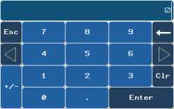
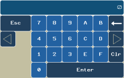
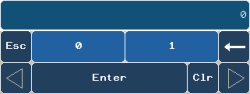
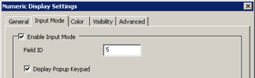
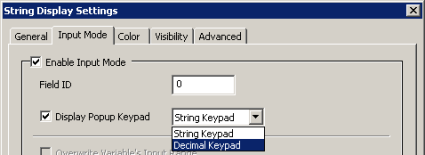
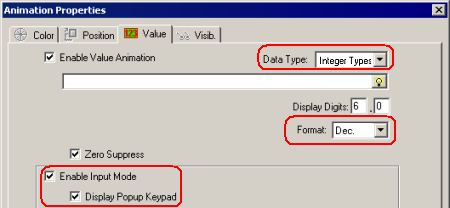
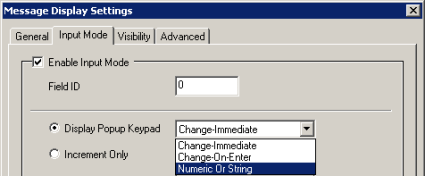
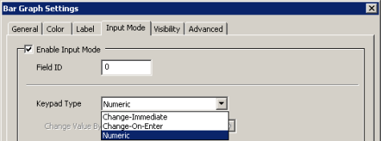
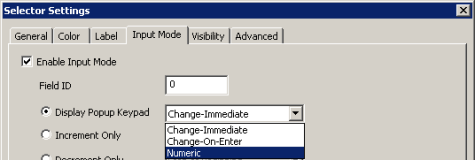

|
|
|
|
|
|
|
|
Numeric Keypads support different types of layouts, based on the current settings of the Data Type and Format.
|
Setting |
Keypad Layout |
|
Data Type: Integer Format: Decimal/Octal |
 |
|
Data Type: Float Format: Fixed, Auto, Scientific |
|
|
Data Type: Integer Format: Hexadecimal |
 |
|
Data Type: Integer Format: Binary |
 |
You can set up how you want the decimal point to display in the Numeric Keypad. You can specify a Fixed or Floating decimal point. For more information, see Section 4.5.7.1, Keys.
You can easily set up a Numeric Keypad for your numeric display, string display, text object, Bar Graph, and Selector. For a numeric display, make the following selections in the Numeric Display Settings dialog box:
In the Input Mode tab, select the Enable Input Mode and Display Popup Keypad check boxes.

For a string display, make the following selections in the String Display Settings dialog box:
In the Input Mode tab, select the Enable Input Mode and Display Popup Keypad check boxes, and then select Decimal Keypad.

For a text object, make the following selections in the Animation Properties dialog box:
Set Data Type to Integer, set Format to the Numeric Keypad layout that you want, and select the Enable Input Mode and Display Popup Keypad check boxes.

For a list part, make the following selections in the List Settings dialog box:
In the Input Mode tab, select the Enable Input Mode check box and then select Numeric Or String.

For a bar graph, make the following selections in the Bar Graph Settings dialog box:
In the Input Mode tab, select the Enable Input Mode check box and then select Numeric.

For a selector, make the following selections in the Selector Settings dialog box:
In the Input Mode tab, select the Enable Input Mode check box and then select Numeric.

The number of decimal digits displayed in the Numeric Keypad depends on the defined Data Type and Label type for the Meter or Bar Graph.
Data Type: Integer type
If Label Type is Automatic, the Numeric Keypad's decimal digits are defined in the Display Digits property.
If Label Type is User Defined or Disabled, the Numeric Keypad's decimal digits are 0.
Data Type: REAL
If Label Type is Automatic, the Numeric Keypad's decimal places are defined in the Display Digits property.
If Label Type is User Defined or Disabled, the Numeric Keypad's decimal digits are 2 digits. For example, 0.00.
The Scientific Notation Keypad allows you to enter or display Real values in scientific format. To set it up, in the Numeric Display Settings dialog box, General tab:
Select Float as the Data Type.
In the Variable, select a Real type variable.
From the Format drop-down list, choose Scientific.